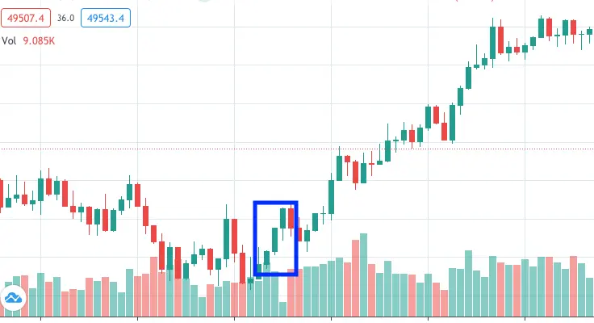

थ्री-व्हाइट सोल्जर्स पैटर्न एक ट्रेडिंग चार्ट पर एक बुलिश कैंडलस्टिक फॉर्मेशन है जो डाउनट्रेंड के निचले हिस्से में होती है। जैसे कि नाम से साफ़ है, पैटर्न तीन हरे रंग के कैंडल से मिलता है। ट्रेडर इस प्रकार की फॉर्मेशन से दोबारा मूल्य उलटी दिशा में बदलने की संभावना को बताते हैं क्योंकि इसमें खरीदारी के दबाव का मजबूत महसूस होता है।
थ्री व्हाइट सोल्जर्स के उल्टे पैटर्न को थ्री ब्लैक क्रोज कहा जाता है। यह पैटर्न एक अपट्रेंड के ऊपरी हिस्से में होते हुए तीन लगातार लाल रंग के कैंडल स्टिक से प्रतिनिधित्त होता है।
| How to identify the three white soldiers pattern |
तीन सफेद सिपाही पैटर्न की पहचान करने के लिए, तीन लगातार हरे या सफेद कैंडलस्टिक की तलाश करें। प्रत्येक कैंडलस्टिक का ओपन और क्लोज पहले से प्रगति वाले कैंडलस्टिक से ऊंचा होना चाहिए। कैंडलस्टिक के शरीर बड़े होने चाहिए और बहुत छोटे (या कोई नहीं) छिपकलियां होनी चाहिए। जैसा कि उल्लेख किया गया है, आपको एक डाउनट्रेंड के नीचे निशान दिखाई देने की संभावना है।
| Three advancing white soldiers example |
यहाँ मान लें कि आप GBP/USD की कीमत को फॉलो कर रहे हैं, जो ट्रेडिंग दिन $1.23723 पर खुलता है। जैसे ही खरीददार और विक्रेता बाज़ार में शामिल होते हैं, कीमत चलना शुरू हो जाती है। यह $1.23657 का निम्नतम स्तर छूती है लेकिन खरीददारों का बहुत दबाव होता है और जोड़ी $1.24293 के उच्चतम स्तर तक पहुँचती है और $1.24211 पर बंद होती है।
अगले ट्रेडिंग दिन, बुल्ल्स ने कीमत को ऊपर धकेलना जारी रखा, और जोड़ी $1.24958 के उच्चतम स्तर तक पहुँचती है जब तक कि यह $1.24873 पर बंद नहीं होती। इस रुझान को तीसरे ट्रेडिंग दिन तक जारी रखा जाता है, जब खरीददारों को GBP/USD की कीमत $1.25494 तक ऊपर ले जाने में कामयाब होता है, जब तक कि यह $1.25388 पर बंद नहीं होती। इस ट्रेडिंग अवधि में ऊपर की चल इन तीन सफेद सिपाहियों के कैंडलस्टिक पैटर्न को बनाती है, जैसा कि नीचे दिखाया गया है।

| What do the three white soldiers mean? |
तीन सफेद सिपाही शब्दावली का अर्थ है कि एक डाउनट्रेंड के बाद खरीदारी के दबाव का एक स्थिर आगमन हो रहा है। इन बलशाली पैटर्नों के जैसे बलशाली पैटर्न आमतौर पर मूल्य चलन का उलट होने की चेतावनी देते हैं। कुछ ट्रेडर तीन सफेद सिपाही देखते ही एक लम्बा पोजीशन खोलकर ऊपर की कोई भी उतार-चढ़ाव का लाभ उठाने की सोचते हैं।
| Three white soldiers Key Point |
